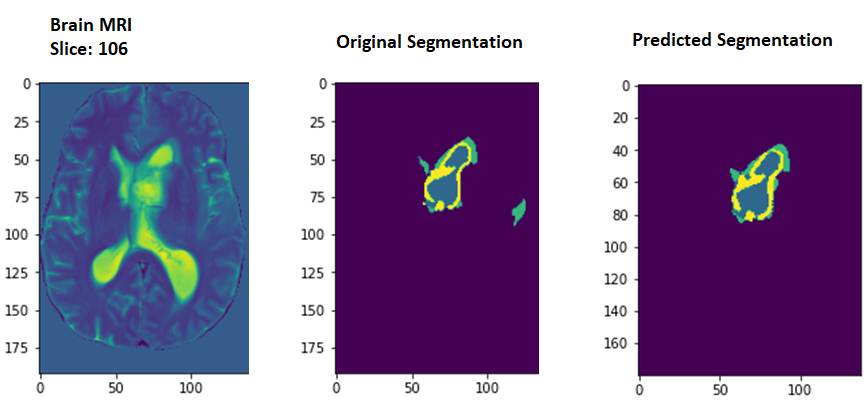
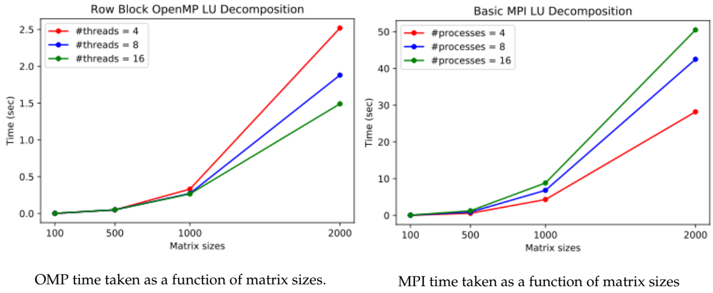
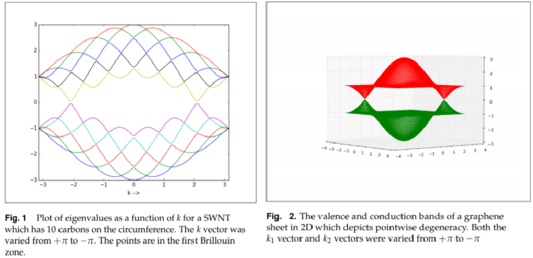

Projects and Blog
- AI based protein co-folding models
- Useful Scripts
- Machine Learning
- MRI Image Segmentation [GitHub]
- Original Research Proposal and Literature Review [Report]
- Deep Reinforcement Learning [GitFront]
- YOLO Object Detection on PASCAL VOC [GitFront]
- Face Generation with GANs [GitFront]
- Text Generation & Language classification (RNNs) [GitFront]
- Multi Label Image Classification [GitFront]
- Multi Layer Neural Networks [GitFront]
- Ad Hoc Information Retrieval System [GitHub]
- Document Clustering [GitHub]
- Machine Learning Algorithms Using only Numpy
- Sentiment Analysis [GitHub]
- Topic Modelling [GitHub]
- Machine Learning, NLP, and Text Analysis using Scikit-learn
- Programming Projects
- Chemistry Research Projects and Summer Internships
AI based protein co-folding models
AlphaFold 3
AlphaFold 2
The protein folding problem
Useful Scripts
Conversion for SMILES string to sdf file
Obabel conversion from pdb to sdf file
Machine Learning
MRI Image Segmentation [GitHub]

Fig 1 Example 2D slice(s) of the 3D brain image showing both a normal subject (top) and a subject with glioma (bottom). Ref: CS446 UIUC
- Gliomas are tumors of the brain that involve glial cells in the
brain. Gliomas are classified as grades I to IV, where the grades
indicate the severity of the diseases. The categories are:
- Grade I: benign, curable with complete surgical resection,
- Grade II: low grade, undergo surgical resection, radiotherapy/chemotherapy,
- Grade III/IV: high-grade gliomas, and
- Grade IV: glioblastoma.
- The task is to identify the location of the tumor, and its
classification into three groups, namely:
- edema which indicates inflammation,
- enhancing which indicates part of the tumor with active growth, and
- the necrotic core which are dead tissue, generally in the center.
- Four different magnetic resonance images (MRI), also known as
contrasts are provided for each subject,
- T1-weighted which tends to be higher intensity with tissues with more lipids,
- T2-weighted which is usually higher intensity for tissues with more water,
- FLAIR this is similar to T2 but free water is suppressed, and
- T1CE is the same as T1, but with a contrast agent injected to brighten certain patterns.
- After training a U-net model of input dimension 192x163x4 on labeled images the task was to predict the segmentation of unlabelled images in the test set.
- This is called semantic segmentation in computer vision and this project was carried out as a part of CS 446: Machine Learning at UIUC.
- For more details and codes please refer to here.
- All calculations were run on Google Cloud.
- A few slices from the results are shown below:

Results obtained from the U-net model
Original Research Proposal and Literature Review [Report]
Results obtained from the U-net model. Ref.: N. Artrith, T. Morawietz, and J. Behler, Phys. Rev. B 83, 153101 (2011)
ORP titled, On the inclusion of long-range interactions among molecules in machine learning models.
Developed an ORP on the problem of inclusion of long-range (electrostatic) interactions in ML and DL algorithms. Analyzed different neural network schemes, especially deep high-dimensional neural networks (HDNNs), and whether they can efficiently learn and predict molecular charges learned from various charge partitioning schemes.
Studied different charge partitioning schemes like Hirshfeld, Charge Model 5, Merz-Singh-Kollman, and Natural Bonding Orbital methods used in molecular dynamics simulations.
Proposed modifications to the existing mathematical formulation and structure of HDNNs to be able to better predict molecular charges, the computational cost for implementing the project, potential setbacks, and alternate plans for the project.
Please find the details of my ORP report here.
Deep Reinforcement Learning [GitFront]
Double Deep Q-Network (DQN) on the game of Breakout using the OpenAI Gym.
- Implemented Deep Q-Network (DQN) and Double DQN on the game of Breakout using the OpenAI Gym.
- Double DQN uses a target network to calculate the target Q-value (next state maximum) whereas the vanilla DQN uses the same network for computing Q values for both the current and next state.
- Please find the details of the Python code used here.
- All calculations were run on Google Colab. Due to limitations in availability of computational resources, the model could be trained only for 500 episodes.
YOLO Object Detection on PASCAL VOC [GitFront]
Results obtained from YOLO
- Implemented a YOLO-like object detector on the PASCAL VOC 2007 data set to produce results as shown in the above image.
- Used a pre-trained network structure for the model. In particular, we used the ResNet50 architecture as a base for our detector. This is different from the base architecture in the YOLO paper and also results in a different output grid size (14x14 instead of 7x7).
- Please find the details of the Python code used here.
- All calculations were run on Google Colab.
Face Generation with GANs [GitFront]

Deep Convolutional Generative Adversarial Network Architecture. Ref: https://gluon.mxnet.io/chapter14_generative-adversarial-networks/dcgan.html
- Trained a generative adversarial network (GAN) with spectral normalization of discriminator weights on the CelebA Dataset to generate facial images.
- The generator and discriminator network architectures implemented are roughly based on DCGAN.
- Spectral normalization of discriminator weights is used to improve the quality of generator images.
- Both DCGAN and LSGAN loss functions were used while keeping the network architecture constant (with and without spectral normalization).
- Please find the details of the Python code used here.
- All calculations were run on Google Cloud. Due to limitations in availability of computational resources, the model could be trained only for 22 epochs. Some results are shown below.
Results obtained from LSGAN and DSGAN
Effect of spectral normalization on the quality of predicted images
Text Generation & Language classification (RNNs) [GitFront]
Visualizing the performance of the RNN model by creating a confusion matrix. The ground truth languages of samples are represented by rows in the matrix while predicted languages are represented by the columns.
- Trained and implemented an RNN for two tasks on text data:
- Text generation - RNN learns to generate text by predicting the most
likely next character based on previous characters. The model consists
of three layers
- a linear layer that encodes the input character into an embedded state,
- an RNN layer (which may itself have multiple layers) that operates on that embedded state and a hidden state, and
- a decoder layer that outputs the predicted character scores distribution.
- The model was trained on the completer works of Shakespeare and 24 different novels of Charles Dickens.
- Language classification - RNN learnt to detect which language a
chunk of text is written in (similar to a feature you might find in an
online translator).
- While this might be relatively easy to do if the input text is Unicode and unique characters indicate a particular language, however this implementation addressed the case where all input text were converted to ASCII characters so our network learnt instead to detect letter patterns.
- The model was trained on the Bible which is a large text translated to different languages but is in easily parsable format, so 20 different copies of the Bible in different languages obtained from Project Gutenberg were used.
- Text generation - RNN learns to generate text by predicting the most
likely next character based on previous characters. The model consists
of three layers
Sample output generated by the RNN after training on Shakespeare is shown below.
TRIA:
He dew that with merry a man for the strange.
I then to the rash, so must came of the chamuness, and that I'll treason dost
the heaven! how there. The run of these thou instress
Which wast true come come on my tongue.
KATHARINE:
My lord, the crown English am a thanks, and I
have you weep you galls. O, I wast thy change;
And go turn of my love to the master.'
ARCHBISHOP OF YORK:
I'll find by dogs, noble.
SAMLET:
The matter were be true and treason
Free supples'd best the soldiered.
TITUS ANDRONICUS:
I ever a bood;
But one a stand have a court in thee: which man as thy break on my bed
'As oath a women; there and shake me; and whencul, comes the house
For them he wall; and no live away. Fies, sir.Multi Label Image Classification [GitFront]
A sample image from the PASCAL VOC 2007 dataset
- Implemented a multi-label image classifier on the PASCAL VOC 2007 data set. Carried out
three experiments:
- Trained AlexNet (PyTorch built-in) from scratch.
- Fine-tuned AlexNet (PyTorch built-in), which was pretrained on ImageNet.
- Trained a simple network (defined in the file classifier.py) from scratch.
- In the second part, designed and trained my own deep simple convolution network to predict a binary present/absent image-level label for each of the 20 PASCAL classes. The network was designed with AlexNet as a starting point. The goal was to get an average mAP score of at least 40 percent.
The average precision on different classes are shown below after 55 epochs on Google Cloud (16GB RAM and 1 NVIDIA K80 GPU).
------- Class: aeroplane AP: 0.6468 -------
------- Class: bicycle AP: 0.4247 -------
------- Class: bird AP: 0.3491 -------
------- Class: boat AP: 0.3989 -------
------- Class: bottle AP: 0.1596 -------
------- Class: bus AP: 0.2318 -------
------- Class: car AP: 0.6456 -------
------- Class: cat AP: 0.3552 -------
------- Class: chair AP: 0.4179 -------
------- Class: cow AP: 0.2235 -------
------- Class: diningtable AP: 0.3586 -------
------- Class: dog AP: 0.3028 -------
------- Class: horse AP: 0.6846 -------
------- Class: motorbike AP: 0.5332 -------
------- Class: person AP: 0.7901 -------
------- Class: pottedplant AP: 0.2159 -------
------- Class: sheep AP: 0.2858 -------
------- Class: sofa AP: 0.2924 -------
------- Class: train AP: 0.5996 -------
------- Class: tvmonitor AP: 0.2998 -------
mAP: 0.4108
Avg loss: 0.1801034240768506Multi Layer Neural Networks [GitFront]

A sample image from the CIFAR-10 image classification dataset. Ref: https://www.cs.toronto.edu/~kriz/cifar.html
Implemented multi-layer neural networks (2 and 3 layers) from scratch on the CIFAR-10 image classification data set, to understand the fundamentals of neural networks and backpropagation.
Developed codes for forward and backward pass, and trained two- and three-layer networks with SGD and Adam optimizer.
Had experience with hyperparameter tuning and using proper train/test/validation data splits.
Results of using the SGD and Adam optimzers on the CIFAR-10 dataset. Note that Adam converges faster than SGD in the loss history plot which is expected. We also see overfitting in the classification plot given that our dataset was realtively small compared to the number of NN parameters.
Ad Hoc Information Retrieval System [GitHub]
Architecture of an ad hoc IR system. Source: Jurafsky and Martin 2009, sec. 23.2
- Using 1400 abstracts of journal articles created an information retrieval system that takes in a query and outputs the top matched abstracts using TF-IDF weights and cosine similarity scores.
- The model was trained on the Cranfield collection . This was the pioneering test collection in allowing precise quantitative measures of information retrieval effectiveness, but is nowadays too small for anything but the most elementary pilot experiments. It contains 1398 abstracts of aerodynamics journal articles, a set of 225 queries, and exhaustive relevance judgments of all (query, document) pairs.
- This project was a part of the ECE 365: Data Science and Engineer course.
- More details of the project can be found in this repository here
Document Clustering [GitHub]
Principal components of feature data and the clusters obtained (kmeans and hierarchical clustering) using Scikit learn’s PCA
In this project, we worked with abstracts of research papers published on different aspects of coronaviruses over the years. Our goal was to segement the abstracts into different clusters based on the similarities in the topics that the abstracts talk about.
- First, used TF-IDF vectorizer to create a feature space to represent the abstracts.
- Used kmeans and hierarchical clustering to creates 3 different clusters and visualize them.
- Analyzed parameters like intra-cluster and inter-cluster distances to access the efficacy of the clustering that we have done.
- Obtained the most important words for each of the clusters that we had created.
Machine Learning Algorithms Using only Numpy
Comparison of SGD with Momentum or Nesterov Accelerated Gradient, and Adam methods and their rate of convergence. (b) Image compression using PCA
- Implemented ML algorithms from scratch using only Python Numpy. All of these algorithms are run on tiny data sets on a standard CPU laptop.
- Stochastic Gradient Descent Variants - SGD with Momentum or Nesterov Accelerated Gradient, and Adam. [GitHub]
- GMM [GitHub]
- HMM [GitHub]
- PCA [GitHub]
- RNN [GitHub]
- Adaboost On Stumps [GitHub]
- Feed Forward Neural Network [GitHub]
- kNN, LDA and Bayes Classifiers and comparison with corresponding scikit-learn modules. [GitHub]
- Mulit-layer Neural Networks (2 and 3 layered NN with SGD and Adam) [GitHub]
- Logistic regression [GitFront]
- Perceptron [GitFront]
- SVM [GitFront]
- Softmax [GitFront]
Sentiment Analysis [GitHub]
Principal components of feature data and the clusters obtained (kmeans and hierarchical clustering) using Scikit learn’s PCA
In this project, we worked with IMDB movie reviews and developed different machine learning models to predict a given review as positive or negative.
- Data cleaning was first carried out (removing stopwords, punctuation and digits).
- Used two different approaches to create the feature space. First, we considered the presence/absence of the word (feature) into account. We used 2 classification models, SVM and random forest. Calculated the f1 score, test set accuracy and 10 most ifluential words for each of the models.
- In the 2nd one, we will used TF-IDF vectorization and also includde bigrams in the analysis. We built naive bayes and random forest classifier. Calculated the f1 score, test set accuracy and 10 most ifluential words for each of the models. Also used cross-validation and grid search approach to tune the random forest model.
Topic Modelling [GitHub]
An illustration of topic modelling Ref:Medium article
In this project, we worked with research papers published on different aspects of coronaviruses over the years. Our goal was to use topic modelling to know different areas each research paper talks about and answer some important questions regarding the viruses.
- First we extractied full body text, abstract and title from each paper and cleaned them.
- Used gensim library to create a LDA topic model on the extracted body texts.
- Used topic modelling and tried to find most relevant papers on aspects like vaccine and respiratory viruses.
Machine Learning, NLP, and Text Analysis using Scikit-learn
Use of spectral clustering to separate data that K-means cannot. (a) Original data (b) Clustering using K-means (c) Spectral Clustering
- This is a collection of jupyter notebooks that were used to learn
Data Science and ML as a part of ECE 365: Data Science & Eng.
course. This involved using modules and methods avaliable in the
scikit-learn package for various ML tasks and comparing its output
againt results obtained from codes written from scratch. The Ocatave
repos are from the ML course by Andrew Ng.
- Machine Learning
- Naive Bayes, Logistic Regression, and Support Vector Machines. [Jupyter Notebook Link]
- K-means clustering, Vector Quantization, Nearest Neighbors Classification, and Linear Regression. [Jupyter Notebook Link]
- Eigen decomposition, Singular Value Decomposition, and Principal Component Analysis. [Jupyter Notebook Link]
- Intro to Octave, Linear regression with one variable, Gradient Descent, and Linear regression with multiple variables.[Octave ]
- Logistic Regression, Regularized logistic regression, and Plotting the decision boundary. [Octave]
- Multi-class Classification/ One-vs-all Classification and Neural Networks. [Octave]
- Neural Networks, Backpropagation, and Visualizing the hidden layer. [Octave]
- Regularized Linear Regression, Bias-variance and learning curves, Polynomial regression, Adjusting the regularization parameter, Computing test set error, and visualization. [Octave]
- Support Vector Machines and Spam Classification. [Octave]
- K-means Clustering and Image compression with K-means. [Octave]
- Natural Language Processing
- Text processing and regular expressions, word frequencies and language, manipulate corpora and plot insightful graphs. [Jupyter Notebook Link]
- Tokenization, bag-of-words representation, logistic regression classifier (discriminative model) using PyTorch. [Jupyter Notebook Link]
- N-gram model, generate representative sentences, study of the effect of training data size, and language model complexity (n-gram size), on the modeling capacity of a language model. [Jupyter Notebook Link]
- Count-Based Word Vectors, Co-occurrence_matrix, PCA, plot-embeddings, Word2Vec Word Embeddings, Cosine Similarity, Polysemous Words, Synonyms & Antonyms, Solving Analogies with Word Vectors, Guided Analysis of Bias in Word Vectors, and Independent Analysis of Bias in Word Vectors. [Jupyter Notebook Link]
- Machine Learning
Programming Projects
Parallel Programming Projects

- Design and Implementations of Parallel OpenMP and MPI LU factorization: Application to Finite Difference Method.
- Optimization of a dense matrix-matrix multiplication routine and understanding its performance behavior.
- Utilization of multi-core CPU using OpenMP and MPI to implement a dense matrix-matrix multiply (MM) routine and understanding the performance behavior.
- Utilization of multi-core CPU using OpenMP and a GPU using OpenACC to implement a matrix-multiply routine for multiplying a band matrix by a dense matrix.
Data Structures in C++ Projects
Images taken from CS 400 UIUC and GeeksForGeeks
- Image transformation
- Generic tree and tree traversal
- Unordered Maps
- Linked List and Merge Sort
Chemistry Programming Projects

- Electronic structure theory programming projects.
- Molecular Geometry Analysis.
- Instructions and Codes
- Harmonic Vibrational Analysis.
- Instructions and Codes
- The Hartree-Fock Self-Consistent Field Method.
- Instructions and Codes
- The Second-Order Möller-Plesset Perturbation Theory (MP2) Energy.
- Instructions and Codes
- Hückel and Su-Schrieffer-Heeger band structures for 1D and 2D solids.
- Wave packet propagation, phase and group velocities, Ehrenfest theorem, convolution theorem, path integrals.
- Time-dependent perturbation theory and spectroscopy.
- Molecular Geometry Analysis.
Chemistry Research Projects and Summer Internships
Ph.D. Research Project

First order corrections to chemical potential, grand potential and internal energy at a finite-temperature in a grand canonical ensemble
- University of Illinois at Urbana-Champaign,
Urbana-Champaign, IL.
- Ph.D. Student and Teaching Assistant, Aug 2016 - Present
- Summary:
- Finite-temperature many-body perturbation theory (FT-MBPT): FT-MBPT is a theory to calculate the thermodynamic parameters of the grand canonical system at a given temperature.
- I implemented the \(\lambda\)-variation method to calculate the \(n\)th-order corrections to grand potential and internal energy using the FT-MBPT formalism which showed it is mathematically inconsistent and does not conserve charge.
- Derived the correct analytic formulas for FT-MBPT using another ansatz wherein charge was conserved. Implemented the FT-MBPT in a canonical ensemble and derived semi-analytic formulas.
- Skills Acquired: Acquired knowledge of and DFT electronic structure methods. Learned about machine learning algorithms. Learned to program in Python and enhanced my programming skills in C++ and FORTRAN.
M. Sc. Research Project
- Research conducted at the National Institute of Science Education
and Research, Bhubaneswar, India, Aug 2014 - June 2016.
- Topic: Diagonal suppressed constant time Correlation Spectroscopy (COSY).
- More details here.
Research Summer Internships
- Undergraduate Summer Intern- 2015
- Research conducted at the University of Calgary, Calgary, Canada,
May 2015 - Aug 2015.
- Topic: Dynamics of gas-hydrate nucleation.
- More details here.
- Research conducted at the University of Calgary, Calgary, Canada,
May 2015 - Aug 2015.
- Undergraduate Summer Intern- 2014
- Research conducted at the Indian Institute of Technology- Bombay,
Mumbai, India, May 2014 - Aug 2014.
- Topic: Quantum reactive flux theory.
- More details here.
- Research conducted at the Indian Institute of Technology- Bombay,
Mumbai, India, May 2014 - Aug 2014.
- Undergraduate Summer Intern- 2013
- Research conducted at the National Institute of Science Education
and Research, Bhubaneswar, India, May 2013 - Aug 2013.
- Topic: Reactive molecular dynamics of hydrocarbon dissociation on Ni surface.
- More details here.
- Research conducted at the National Institute of Science Education
and Research, Bhubaneswar, India, May 2013 - Aug 2013.